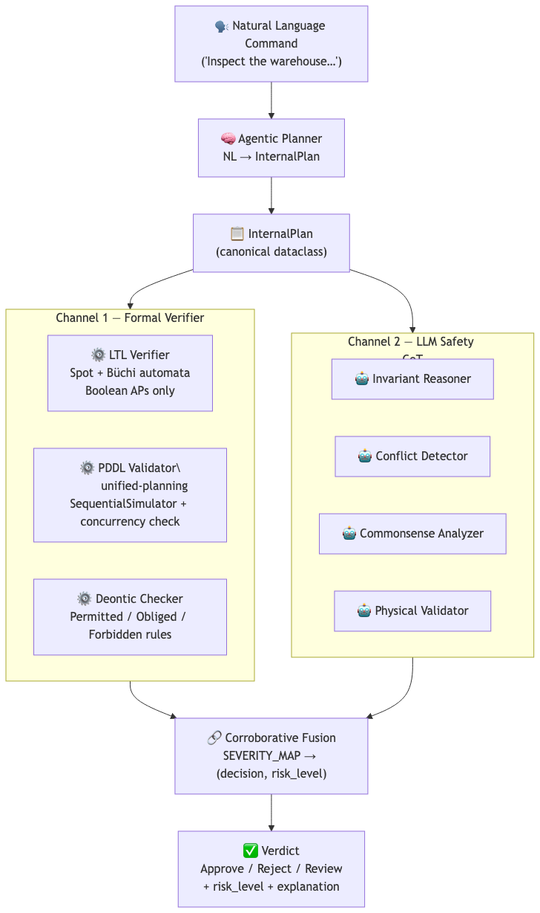
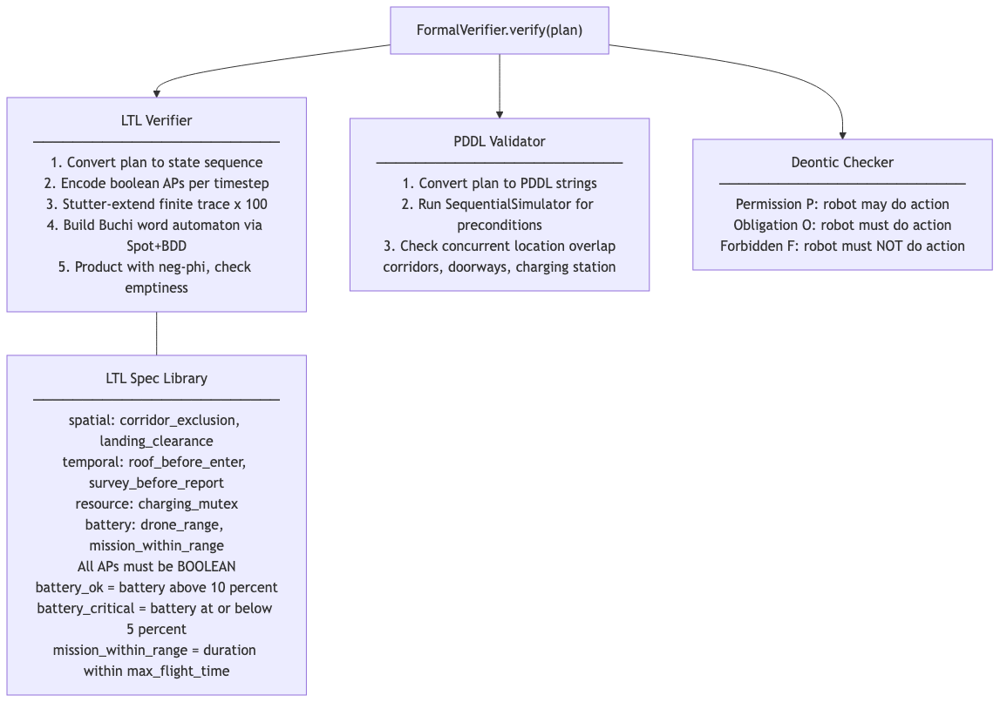
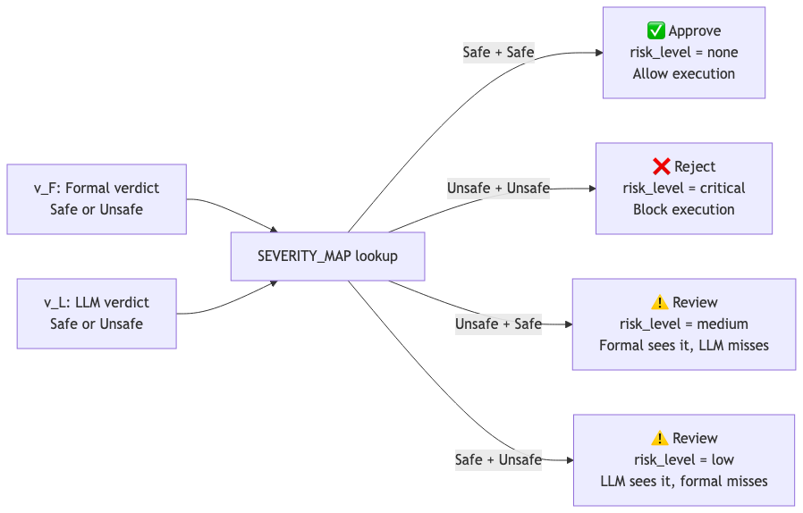
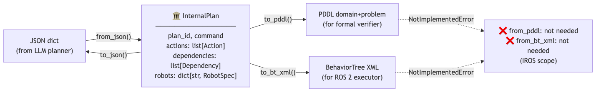

Large language models (LLMs) have demonstrated remarkable capability in decomposing complex natural-language commands into multi-robot task plans. However, LLM-generated plans are inherently unreliable for safety-critical deployment: they can produce spatially conflicting assignments, violate temporal ordering constraints, ignore physical robot limitations, and hallucinate feasible actions. Existing safety approaches apply either formal logic verification or LLM-based safety reasoning in isolation—each covering distinct, non-overlapping hazard categories.
We introduce SAFEMRS, a corroborative dual-channel pre-execution safety verification framework that combines a formal logic channel (LTL model checking + PDDL validation) with an LLM-based Chain-of-Thought safety reasoning channel. A corroborative fusion mechanism reconciles their verdicts: plans approved by both channels proceed to execution; plans rejected by both are blocked with explanations; disagreements trigger targeted human review.
We evaluate SAFEMRS on a 7-category heterogeneous multi-robot safety benchmark comprising 102 scenarios with a UAV–UGV inspection team in Gazebo Harmonic. Experiments reveal a clear complementary failure pattern: the formal channel achieves 100% HDR on structural categories at sub-millisecond latency, while the LLM channel adds commonsense and physical coverage invisible to formal logic. Corroborative dual-channel fusion achieves 0.0% hard false positive rate by escalating all channel disagreements to human review (23.5% review rate), yielding 87.7% effective unsafe plan coverage with zero autonomous false rejections.

Fig. 1 — SAFEMRS dual-channel architecture. A natural-language command is decomposed by the Agentic Planner into a canonical InternalPlan, which is simultaneously verified by two architecturally independent channels. The corroborative fusion mechanism reconciles their verdicts into a final decision (Approve / Reject / Review).
Sound but incomplete. Encodes safety constraints as LTL formulas verified via the Spot library, PDDL precondition validation, and deontic logic (Permitted/Forbidden/Obligatory). Achieves 100% HDR on spatial, resource, temporal, and ordering categories at <1 ms latency.
Complete but unsound. Four parallel sub-reasoners—Invariant, Conflict, Common-Sense, Physical Feasibility—using structured Chain-of-Thought prompting. Uniquely covers common-sense (71.4%) and physical feasibility (100%) hazards invisible to formal logic.

Fig. 2 — Channel 1 formal verifier: LTL model checking via Spot + Büchi automata, PDDL precondition validation, and deontic constraint enforcement.

Fig. 3 — Corroborative fusion decision table. The four verdict combinations map to Approve, Reject, or Review with associated risk levels.

Fig. 4 — InternalPlan data-flow through the SAFEMRS pipeline. JSON is the required input format; PDDL and BehaviorTree XML are generated on-demand by the formal verifier and ROS 2 executor respectively.
7 hazard categories • 53 unsafe + 49 safe scenarios • UAV–UGV building inspection
| Category | Unsafe | Safe | Total | Example Hazard |
|---|---|---|---|---|
| Spatial conflicts | 10 | 7 | 17 | Two robots in same corridor simultaneously |
| Battery/range | 7 | 8 | 15 | Mission exceeds UAV max flight time |
| Commonsense | 7 | 7 | 14 | Drone assigned near ceiling fans |
| Ordering/dependency | 7 | 7 | 14 | Report generated before inspection complete |
| Physical feasibility | 7 | 7 | 14 | Quadruped assigned to climb a ladder |
| Resource conflicts | 7 | 7 | 14 | Both robots need same charging station |
| Temporal ordering | 8 | 6 | 14 | Go2 enters building before drone confirms safety |
| Total | 53 | 49 | 102 |
| System | HDR ↑ | FPR ↓ | Coverage | Review | EffCov | Latency |
|---|---|---|---|---|---|---|
| No Verification | 0% | 0% | 0/7 | — | 0% | <1ms |
| Formal-Only | 77.4% | 10.2% | 5/7 | — | 77.4% | <1ms |
| LLM-Only (Qwen3:8b) | 83.0% | 4.1% | 4/7 | — | 83.0% | 69.3s |
| SAFEMRS (Dual) | 64.2% | 0.0% | 3/7 | 23.5% | 87.7% | 69.3s |
| Category | Formal-Only | LLM-Only | SAFEMRS (Dual) |
|---|---|---|---|
| Spatial conflicts | 100% | 100% | 100% |
| Resource conflicts | 100% | 100% | 100% |
| Temporal ordering | 100% | 62.5% | 62.5% |
| Ordering/dependency | 100% | 42.9% | 42.9% |
| Battery/range | 85.7% | 100% | 85.7% |
| Physical feasibility | 42.9% | 100% | 42.9% |
| Commonsense | 0% | 71.4% | 0%* |
| Overall | 77.4% | 83.0% | 64.2% |
* Commonsense dual HDR = 0% because formal always returns Safe on these categories; all LLM detections are escalated to Review rather than hard-rejected.
| Backbone | HDR (LLM-ch) | HDR (Dual) | FPR (Dual) | EffCov | Latency |
|---|---|---|---|---|---|
| Qwen3:8b (local) | 83.0% | 64.2% | 0.0% | 87.7% | 69.3s |
| GPT-5.2 (cloud) | 98.1% | 75.5% | 2.0% | 96.1% | 5.2s |
A free, local <20B model + formal rules achieves comparable safety to commercial frontier LLMs.
| Property | GPT-5.2 Alone | Qwen3:8b Alone | SAFEMRS (Qwen3:8b) |
|---|---|---|---|
| Effective Coverage | 98.1% | 83.0% | 87.7% |
| Hard FPR | ~10% | 4.1% | 0.0% |
| Cost / plan | $$$ (API) | Free | Free |
| Internet Required | Yes | No | No |
| Latency | 5.2s | 69.3s | 69.3s |
| Edge Deployable | ✗ | ✓ | ✓ |
Live validation with a PX4 Iris x500 UAV and Unitree Go2 quadruped in Gazebo Harmonic.
| # | Scenario | Safety Channel | Expected |
|---|---|---|---|
| D1 | Safe plan: drone surveys roof, Go2 inspects ground | Both Safe | Approve |
| D2 | Spatial conflict: both robots in corridor | Formal (LTL) | Reject |
| D3 | Common-sense: drone near ceiling fans | LLM | Review |
| D4 | Temporal: Go2 enters before roof cleared | Formal (ordering) | Reject |
| D5 | Battery overrun: 200m+ flight plan | Formal (range) | Reject |
All five scenarios produced the expected safety verdicts in live testing: D1 was approved and both robots executed successfully; D2 and D4 were hard-rejected by the formal channel; D3 was escalated to Review; D5 was hard-rejected for exceeding battery range. These confirm that SAFEMRS integrates end-to-end with a real ROS 2 robotic stack.
@inproceedings{albatati2026safemrs,
author = {Al-Batati, Abdulrahman S. and Koubaa, Anis and Gabr, Khaled and Sibaee, Serry and Abdelkader, Mohamed and Alhabashi, Yasser and Alahmed, Fatimah and Jarraya, Imen and Boulila, Wadii},
title = {{SAFEMRS}: Corroborative Dual-Channel Pre-Execution Safety Verification for {LLM}-Based Heterogeneous Multi-Robot Task Planning},
booktitle = {IEEE/RSJ International Conference on Intelligent Robots and Systems (IROS)},
year = {2026},
address = {Pittsburgh, PA, USA},
}